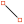
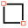
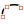
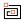
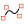
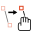
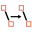

This filter is a tool: You can create geometrical figures to add them to the image.
Ao utilizar este filtro, elementos inseridos na imagem serão colocados em uma nova camada. Assim, a imagem não será modificada: todas as modificações ocorrem nessa nova camada.
![[Nota]](images/note.png)
|
Nota |
|---|---|
|
If the image is in indexed mode, this menu entry is disabled. |

A pré-visualização (com uma régua horizontal e uma vertical) no lado esquerdo da janela principal é na verdade a sua área de trabalho, onde você verá suas figuras.
Você pode adicionar e modificar figuras usando as ferramentas do GFig (Barra de ferramentas do GFig) e usando as opções apropriadas ( Janela principal do GFig).
Na parte superior da caixa de diálogo, você pode encontrar um conjunto de ícones que representam as funções deste filtro. As dicas flutuantes que aparecem ao parar sobre cada botão ajudam bastante.
Funções para desenhar objetos
Na parte esquerda da barra de ferramentas, você pode encontrar algumas ferramentas para desenhar objetos. Você os ativa clicando no ícone correspondente. Você pode criar os seguintes objetos (note que os Pontos de controle são criados ao mesmo tempo que o objeto):
-

Create line -
Com esta ferramenta, você pode desenhar linhas. Clique na pré-visualização para marcar o ponto de partida, em seguida, arraste o ponteiro do mouse até o ponto final. (Observe que você poderá ver as alterações na janela de imagem do GIMP enquanto desenha)
-

Create rectangle -
Com esta ferramenta, você pode desenhar retângulos. Clique na pré-visualização para marcar ponto de partida, em seguida, arraste o ponteiro do mouse para criar o retângulo.
- Create circle
-
Com esta ferramenta, você pode desenhar círculos. Clique na pré-visualização para marcar o centro, em seguida, arraste o ponteiro do mouse até o tamanho (raio)desejado.
- Create ellipse
-
Com esta ferramenta, você pode desenhar elipses. Clique na pré-visualização para marcar o centro, em seguida, arraste o ponteiro do mouse para obter o tamanho e a forma desejados.
-

Create arc -
Com esta ferramenta, você pode desenhar arcos de círculos. Clique na pré-visualizaçãopara definir o ponto de início. Clique novamente para definir outro ponto do arco. Clique novamente para marcar o terceiro ponto - quando você soltar o botão do mouse, o ponto final do arco é colocado e um arco que passa por estes três pontos é desenhado.
- Create regular polygon
-
Com esta ferramenta, você pode criar um polígono regular. Comece com a configuração do número de lados em Opções de ferramenta à direita da pré-visualização. Em seguida, clique na pré-visualização para marcar o centro e, sem soltar o botão do mouse, arraste o ponteiro para obter o tamanho e orientação desejados.
- Create star
-
Com esta ferramenta, você pode criar uma estrela. Comece com a configuração do número número de pontas (Lados) nas Opções de ferramenta à direita da pré-visualização. Em seguida, clique na pré-visualização para posicionar o centro e, sem soltar o botão do mouse, arraste o ponteiro para obter o tamanho e a orientação desejados.
-

Create spiral -
Com esta ferramenta, você pode criar uma espiral. Comece com a configuração do número de voltas (Lados) e orientação das voltas nas Opções de ferramenta à direita da pré-visualização. Em seguida, clique na pré-visualização para colocar o centro e, sem soltar o botão do mouse, arraste ponteiro para obter o tamanho desejado.
-

Create bezier curve -
Com esta ferramenta, você pode criar curvas de Bézier. Clique na pré-visualização para definir o ponto de início e os outros pontos: a curva será criada entre esses pontos. Para finalizar a curva, pressione Shift ao criar o último ponto.
Funções para gerenciamento de objetos
No meio da barra de ferramentas, você pode encontrar ferramentas para gerenciar objetos:
-

Move an object -
Com esta ferramenta, você pode mover o objeto ativo. Para selecionar um objeto, clique em um de seus pontos de controle.
- Move a single point
-
Com esta ferramenta, você pode clicar e arrastar um dos pontos de controle do objeto. Cada um desses pontos transforma o objeto de uma forma diferente.
-

Copy an object -
Com esta ferramenta, você pode duplicar um objeto. Clique em um ponto de controle do objeto e arraste-o para o local desejado.
- Delete an object
-
Clique em um ponto de controle do objeto para excluí-lo.
- Select an object
-
With this tool, you can select an object to activate it. Simply click on one of its control points.
Funções para organização dos objetos
À direita da barra de ferramentas, você pode encontrar ferramentas para controlar a sobreposição dos objetos (você também pode obtê-las clicando no botão de lista flutuante se os ícones não estiverem visíveis). Você tem:
-
 Up (Raise selected object)
,
Up (Raise selected object)
,
 Down (Lower selected object)
Down (Lower selected object)
-
Com esta ferramenta, você pode mover o objeto selecionado um nível para cima ou para baixo.
- Top (Raise selected object to top) , Bottom (Lower selected object to bottom)
-
Move o objeto selecionado para o topo de todos os outros, ou para trás de todos.
Funções para exibição de objetos
- Back (Show previous object) , Forward (Show next object)
-
Estas funções permitem exibir um único objeto de cada vez, saltando de um para outro.
- Show all objects
-
Esta função mostra todos os objetos novamente, depois de usar as duas funções anteriores.
|
|
Nota |
|---|---|
|
Se a sua janela é pequena demais para mostrar todos os ícones, a barra de ferramenta fornece uma lista flutuante contendo as funções que faltam. |
- Detalhes do objeto
-
A Posição XY mostra a posição do ponteiro, em cordenadas, em pixels,da pré-visualização (são diferentes das coordenadas na imagem)
- Opções de ferramenta
-
Se a ferramenta selecionada oferece opções (como o número de lados), você pode alterá-las aqui.
- Contorno
-
Se esta opção estiver marcada, o objeto será desenhado. Estão disponíveis dois botões, para selecionar a cor e o tipo de pincel. Alterações de cor ou pincel também podem afetar objetos já existentes que estejam selecionados.
- Preenchimento
-
Com a ajuda da lista flutuante, você poderá decidir se e como o objeto será preenchido: com uma cor, uma textura ou um degradê.
- Mostrar grade
-
Se esta opção estiver marcada, uma grade é aplicada na pré-visualização para tornar mais fácil o posicionamento dos objetos.
- Atrais para a grade
-
Se esta opção estiver marcada, os objetos vão se alinhar à grade.
- Mostrar imagem
-
Quando esta opção estiver marcada, a imagem atual é exibida na pré-visualização (área de trabalho) — caso contrário, só os pontos de controle e linhas usadas como esqueleto dos objetos são mostrados.